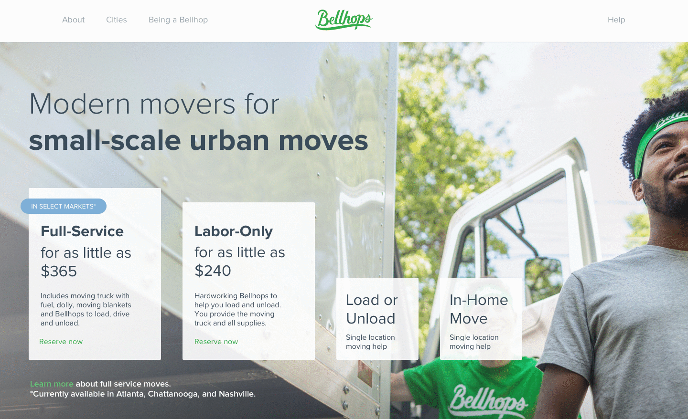
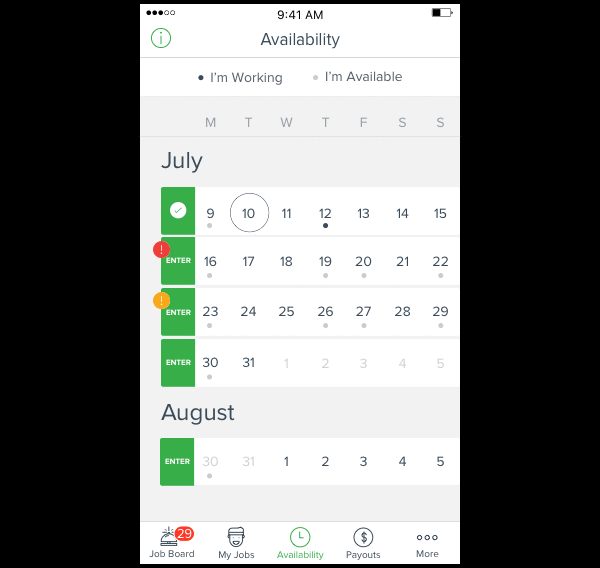
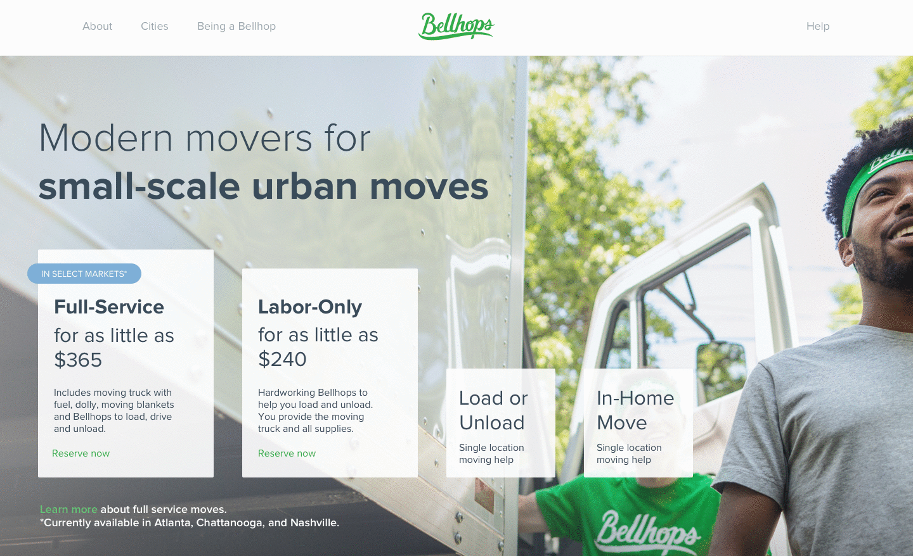
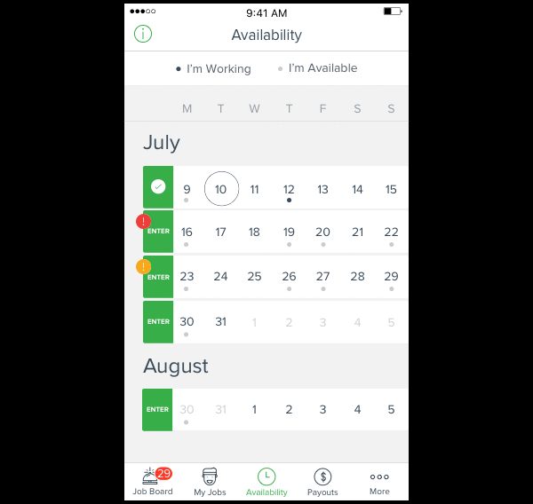

 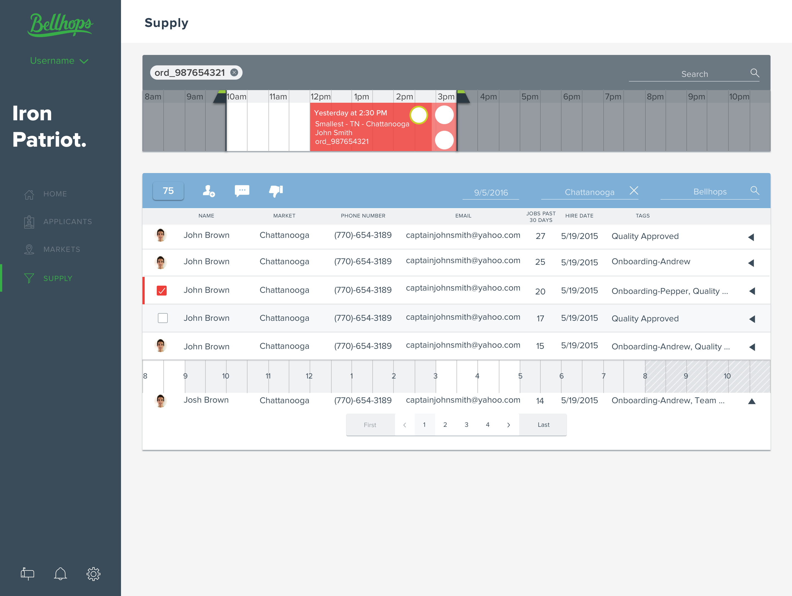
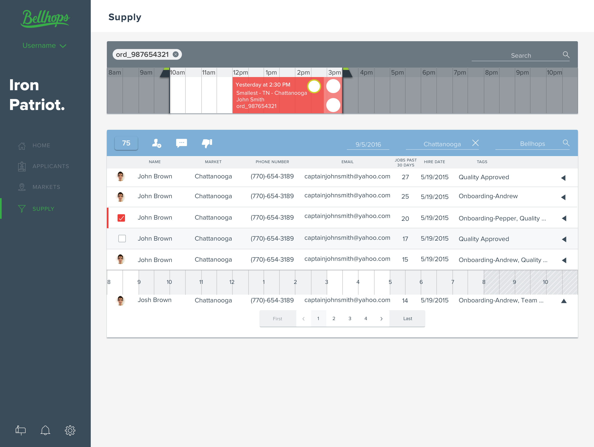


 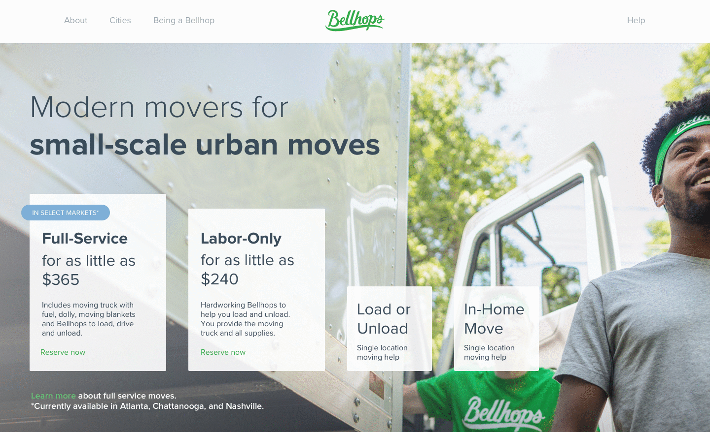
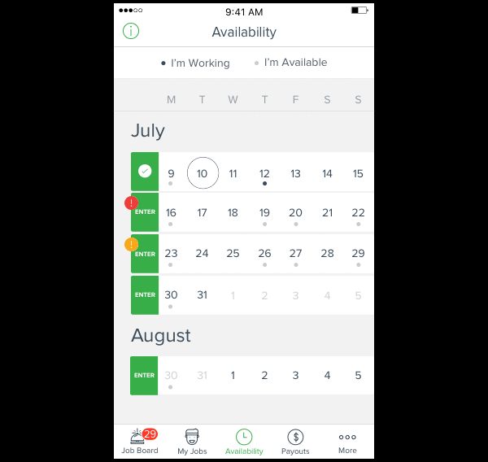
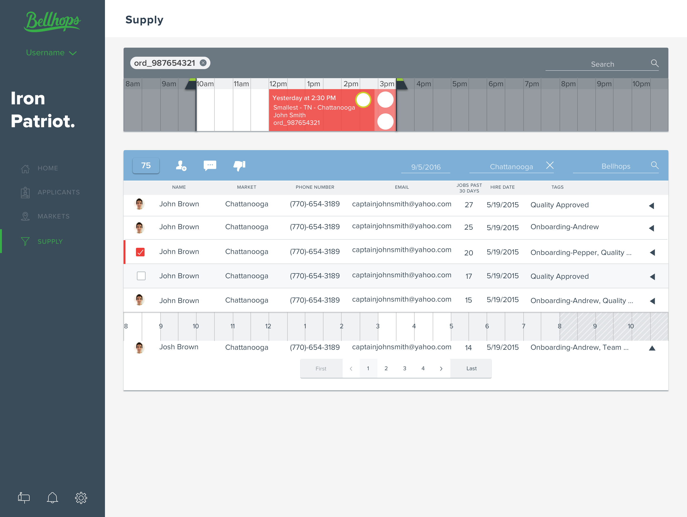
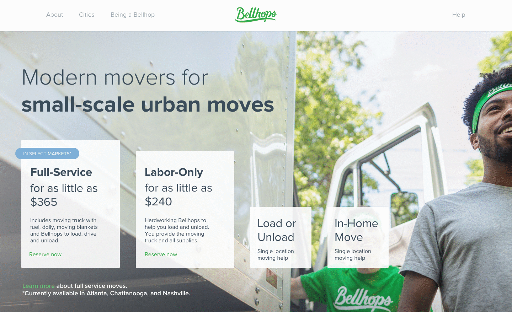
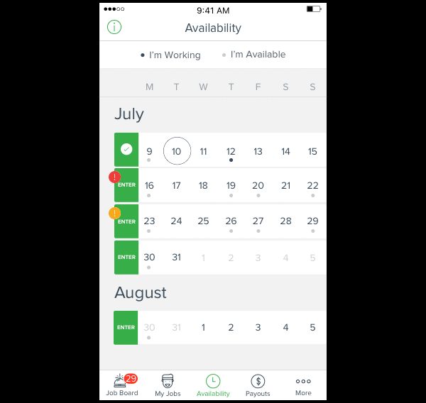
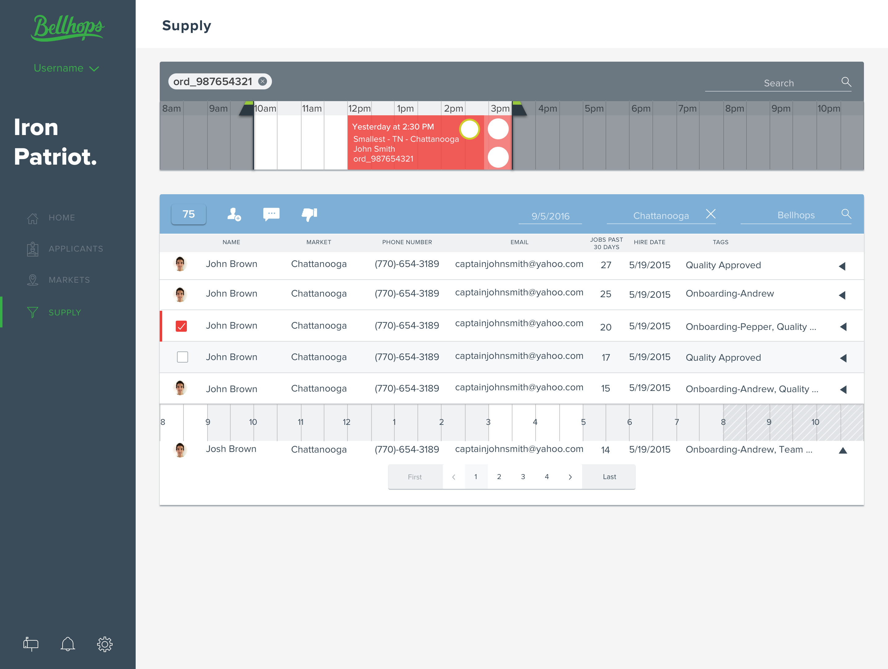
Music players are ubiquitous in the app stores of all smartphones. However, most users stick with the stock music apps that come with their phone unless they subscribe to a service such as Spotify or Pandora. This leaves a lot of people using the default "Music" app provided by Apple on iPhones. In iOS 9 the music app came with a completely new design, which left many users frustrated. Articles like How to Make Sense of the Confusing New Apple Music App starting popping up, hoping to ease the frustration of new users.
I wanted to solve this problem becasue the stock music app is what I use. I myself had a few frustrations. Most notably, an easier navigation system and a better album view. I'm not a huge fan of the way Apple has broken the "Library" section in to two seperate sections, "Recently Added" and the View switcher which brings up a menu allowing you to choose how you'd like to view your music "Artists, Albums, Songs, Genres, Composers, Only Downloaded Music". After many trials I came up with useable sizings of album art, readable text sizes and an overall better layout as far as usability is concerned.
While minor, these quirks have slowly become annoying, especially when you listen to a lot of music and don't have it organizing into neat playlists. Constantly tapping on the small arrow to display all the tracks in the album is irritating, and a much better solution is available.
The process to create a useable UI was a lot of trial and error. Tackling the problem of the album view was the most challengeing as I had to figure out which album size was actually tappable, and which font size would actually be readable on the device.
I went from an intial three albums per row which Apple currently uses in their Music app down to two in order to create a more useable view. An important thing to note here is that the purpose of an album view is to look at the albums... If the covers are so small that you have a hard time looking at the detail, then the view is wasted.
I then noted the way in which that screen would be used in relation to the user's expereince. Things like how the user would control the place in a song and what would happen when the user tapped on an album cover were also noted.
I also showed what the view would be when a song was being played and other songs in the album wanted to be seen. I tried to make it as simple and straightforward for the user. A simple swipe up reveals the track listing with the ability to scrub, pause/play, and return to the "all album view".
To me this seems like a much better solution because it removes the compplicated variety of screens that the current app has and breaks it down into just two: the "all album view" where you are able to pick which album (or playlist) you want to hear, and the actual "currently playing" view.
This project was really fun for me because I was able to actually document the progress that I was making and was working on designing something I myself would actually want to use. I think that always makes the end product better. Though this project isn't anywhere near completeion, it's nice to step back and see where the vision came from and understand where it is going.
Incidentally, someone actually made a Music app that takes cues from the stock Apple one but simplifies the views and adds gestures to switch between songs etc. Check it out here.